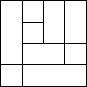
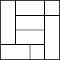
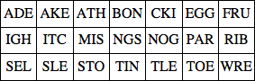
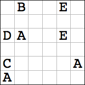
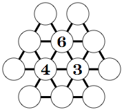
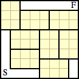

Holiday Puzzles 2013
| 1. SQUARE SUDOKUS
| |
| |
Place 16 digits in each 4×4 array so that every row and column contains the same 4 digits in a different order. Each rectangular box should contain the digits of a perfect square when read across or down.
|  | 
|  |
| |
|
| 2. HOLIDAY TRIPLES | |
Combine some of the trigrams below to spell out some words associated with Christmas. Each trigram will be used exactly once.
|  | | | |
|
| 3. PROPERTY DIVISION | |
Santa's will leaves his 36 acres at the North Pole to his 9 reindeer: 4 connected acres to each. The shape of each plot (except Rudolph's) is indicated by a letter. Plots with the same letter are the same shape (after rotation and reflection). Plots with different letters are differently shaped. Can you figure out how Santa's land should be divided?
|  | | | |
|
| 4. NUMBER SNOWFLAKE
Put a different number from 1-12 in each circle so that the circles on parallel lines have the same total. Different slopes of lines can have different totals. Some numbers are placed for you.
|  | | | |
|
| 5. MAKING THE ROUNDS |
Santa needs to inspect his toy shop, moving only horizontally and vertically, starting at S, and finishing at F. He also wants to visit exactly 2 squares of each 3×2 room of the facility, and never retrace his steps. What path should Santa take?|  | | | |
|